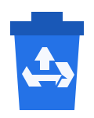
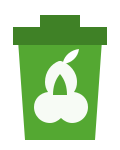
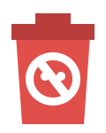
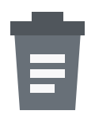

01可回收物纸 · 塑料 · 玻璃 · 金属 · 织物
校园生活分类指南
输入名称或上传图片，快速获得垃圾类别、投放建议和判断原因。无需复杂模型，靠清晰的知识库把每次分类讲明白。




快速判断
先完全匹配名称，再匹配别名和关键词；找不到时会给出相近建议。
输入一个垃圾名称，这里会显示完整的分类解释。
校园场景
宿舍、食堂、教室和快递站，是校园垃圾最集中的四个场景。
DORMITORY
饮料瓶、纸巾、电池和洗护用品最常见。保持可回收物清洁干燥，有害垃圾单独收集。
分类科普
能回收、有危害、易腐烂、其余项。先判断材质和状态，再决定投放位置。
适宜回收和资源化利用，投放前尽量保持清洁、干燥。
容易腐烂的食物残余、瓜果皮核和其他有机废弃物。
对人体健康或环境有直接、潜在危害，需要安全处理。
除前三类以外，或已被污染、难以回收利用的生活垃圾。
易混淆提醒
项目介绍
项目面向校园生活，以结构化知识库为核心，用前端技术完成名称查询、图片预览、结果解释和分类科普。当前图片功能采用“上传预览 + 用户辅助确认”的可靠流程，不声称使用未接入的图像识别模型。
输入名称，或上传图片后补充物品名称。
依次执行名称、别名、包含与模糊匹配。
返回类别、投放建议、原因和注意事项。
在 JSON 中增加条目即可扩展知识库。